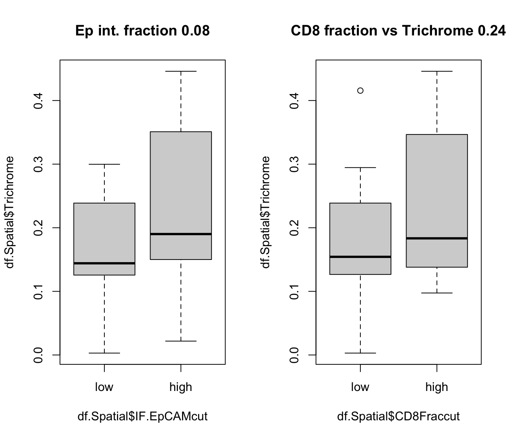
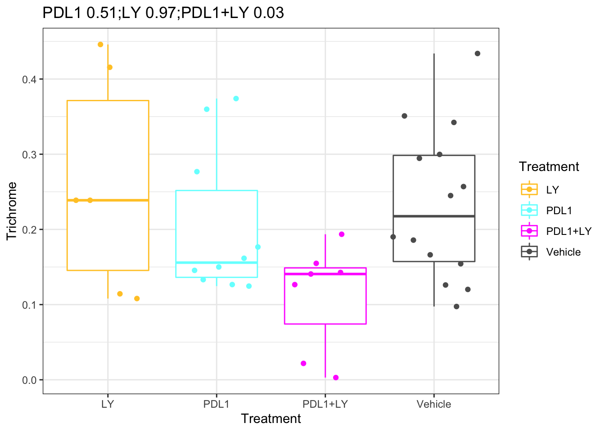
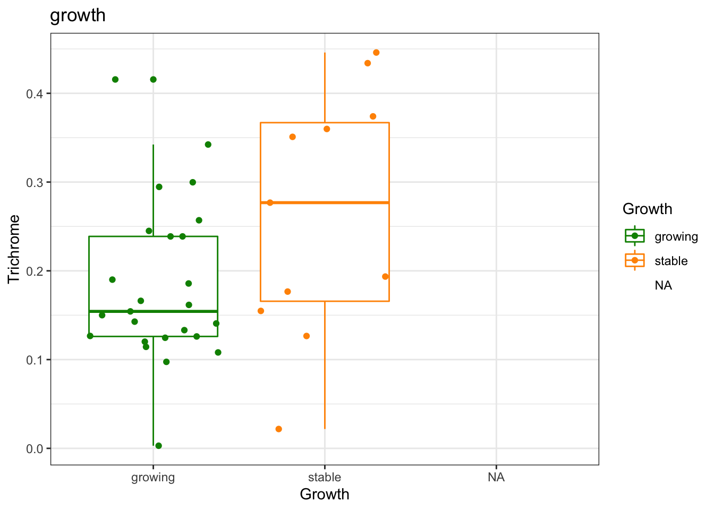
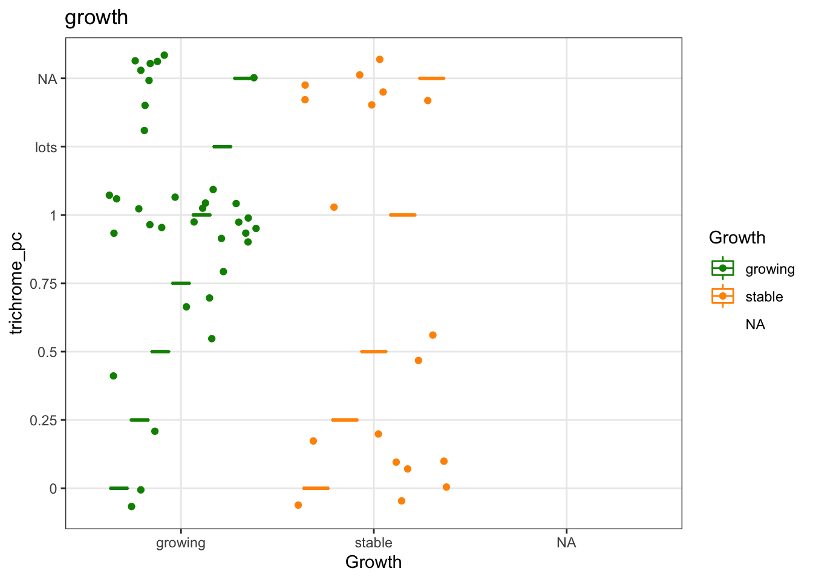
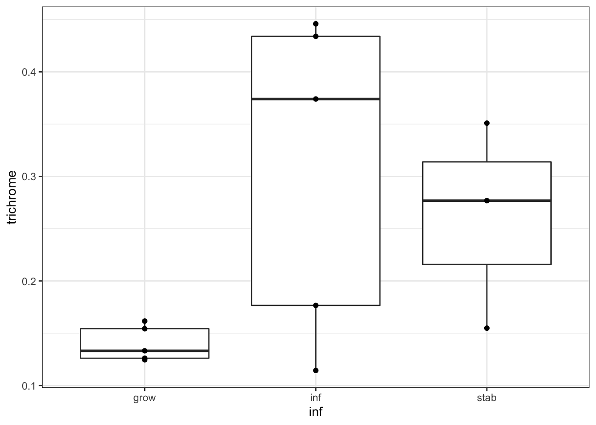

Chapter 23 Trichrome staining
Quantification of trichrome staining was performed in Qupath using the following steps:
- image is loaded as a “DAB” image
- using “gold standard” trichrome-stained images with good stroma and epithelial content, estimate the stain vectors
- Perform color deconvolution
- A pixel classifier was used to estimate trichrome content
- A pixel classifier was used to estimate tumor content
A snippet of the qupath script is shown below:
# insert some text here
setImageType('BRIGHTFIELD_H_DAB');
setColorDeconvolutionStains('{"Name" : "trichrome", "Stain 1" : "Hematoxylin", "Values 1" : "0.71695 0.66336 0.21432 ", "Stain 2" : "DAB", "Values 2" : "0.46299 0.76212 0.45257 ", "Background" : " 255 255 255 "}');
selectAnnotations();
addPixelClassifierMeasurements("stroma_classifier_again", "stroma_classifier_again")
selectAnnotations();
addPixelClassifierMeasurements("test_tumor", "test_tumor")
def entry = getProjectEntry()
def name = entry.getImageName() + '.txt'
def path = buildFilePath(PROJECT_BASE_DIR, 'annotation results')
mkdirs(path)
path = buildFilePath(path, name)
saveAnnotationMeasurements(path)23.1 Associations with cellular fraction (wsi)
# load the data
TrichromeData=read.xlsx("../data/trichrome-staining-result.xls", 1)
midx=match(TrichromeData$SampleID, gsub("_", "", Cdata$TumorID))
Cdata$Trichrome=NA
Cdata$Trichrome[na.omit(midx)]=TrichromeData$Percentage.Stroma[which(!is.na(midx))]
t2=WSIvalFracs[, match(rownames(df.Spatial), colnames(WSIvalFracs))]
df.Spatial=cbind(df.Spatial, t(t2))
#head(df.Spatial)
df.Spatial$Trichrome=NA
midx=match(TrichromeData$SampleID, rownames(df.Spatial))
df.Spatial$Trichrome[na.omit(midx)]=TrichromeData$Percentage.Stroma[-which(is.na(midx))]
# plot associations
n2=c("CD8", "EpCAM", "SMA", "Unclass", "EpCAM: SMA")
#pdf("~/Desktop/richrome-association-WSI-data-Calc2.pdf", width=6, height=5)
par(mfrow=c(2,3))
for (i in n2){
a1=cor.test(df.Spatial$Trichrome, df.Spatial[ ,match(i, colnames(df.Spatial))], use="complete")
n1=paste(i, "cor:", round(a1$estimate,1), "p:", round(a1$p.value,2))
plot(df.Spatial$Trichrome, df.Spatial[ ,match(i, colnames(df.Spatial))], main=n1, xlab="Trichrome", ylab=i)
}
#dev.off()
23.2 Associations with CD8 content
par(mfrow=c(1,2))
a1=wilcox.test(df.Spatial$Trichrome~df.Spatial$IF.EpCAMcut)$p.val
boxplot(df.Spatial$Trichrome~df.Spatial$IF.EpCAMcut, main=sprintf("Ep int. fraction %s", round(a1,2)))
a1=wilcox.test(df.Spatial$Trichrome~df.Spatial$CD8Fraccut)$p.val
boxplot(df.Spatial$Trichrome~df.Spatial$CD8Fraccut, main=sprintf("CD8 fraction vs Trichrome %s", round(a1,2)))
23.3 Associations with growth and treatment
#pdf("~/Desktop/testoutput.pdf", height=6, width=6)
pv1=sapply(c("PDL1", "LY", "PDL1+LY"), function(x) wilcox.test(df.Spatial$Trichrome[which(df.Spatial$Treatment%in%c("Vehicle", x))]~
df.Spatial$Treatment[which(df.Spatial$Treatment%in%c("Vehicle", x))])$p.value)
names(pv1)=c("PDL1", "LY", "PDL1+LY")
ggplot(df.Spatial[ ,c("Treatment", "Trichrome")], aes(x=Treatment, y=Trichrome, col=Treatment))+geom_boxplot()+geom_jitter()+
scale_color_manual(values=ColMerge[ ,1])+theme_bw()+ggtitle(paste(paste(names(pv1), round(pv1, 2)), collapse=";"))

Figure 23.1: Trichrome staining with treatment
ggplot(df.Spatial[ ,c("Trichrome", "Growth")], aes(x=Growth, y=Trichrome, col=Growth))+geom_boxplot()+geom_jitter()+
scale_color_manual(values=c(ColSize, "black"))+theme_bw()+ggtitle(paste("growth", round(a1a, 2)))

Figure 23.2: Trichrome with growth

Figure 23.3: Trichrome with growth
23.4 Association with hyperinflammatory status
We can also do a boxplot for trichrome status and whether it associates with hyperinflammation in our rat samples
vstEpInf$Inflammation3
## [1] inf grow grow inf grow grow grow grow grow grow grow grow grow grow inf
## [16] grow inf grow inf grow
## Levels: grow inf
vstEpInf$Inflammation2
## [1] inf grow grow inf grow grow stab stab stab grow grow stab stab grow inf
## [16] grow inf grow inf grow
## Levels: grow inf stab
vstEpInf$Inflammation
## [1] yes no no yes no no no no no no no no no no yes no yes no yes
## [20] no
## Levels: no yes
save(vstEpInf, file="figure-outputs/temp_test.RData")
ax1=colnames(vstEpInf)
t2=match(gsub("_", "", substr( ax1, 1, nchar(ax1)-2)), rownames(df.Spatial))
newTab=data.frame(trichrome=df.Spatial[na.omit(t2), "Trichrome"],
inf=vstEpInf$Inflammation2[-which(is.na(t2))],
names=ax1[-which(is.na(t2))])
#pdf("figure-outputs/EXT5I_trichrome.pdf", height=5, width=4)
ggplot(newTab, aes(y=trichrome,x=inf))+geom_boxplot()+geom_point()+theme_bw()

Figure 23.4: association with hyperinflammation